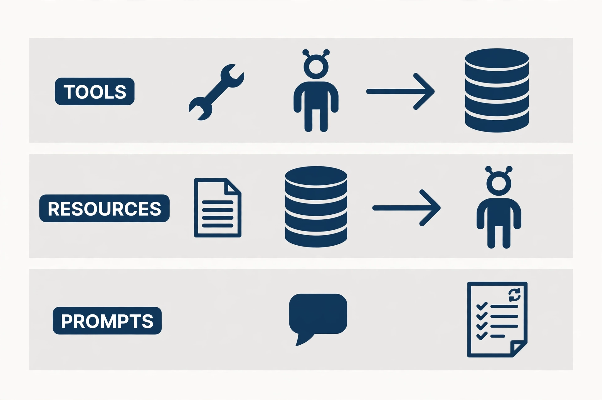
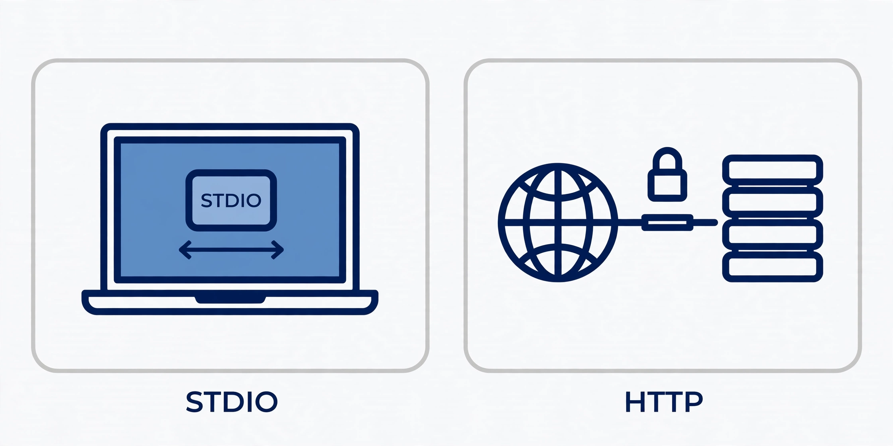

Build a real MCP server in Python: the complete FastMCP guide
Your agent is smart but it cannot touch anything — until you give it tools. FastMCP turns plain Python functions into a standard MCP server any agent host can use, and this guide builds one completely: a reading-list server with tools, resources, and a prompt, verified end to end with no API key.
- What: FastMCP, the Python framework for building Model Context Protocol servers and clients.
- Version: 4.1.4 (MCP protocol 2.3.0), verified in this guide.
- Requirements: Python 3.10 or newer and pip or uv; no API key, model account, or GPU.
- Licence: Apache-2.0.
- Verified end to end: 4 tools, 1 resource, 1 resource template, 1 prompt — over the in-memory client, stdio via inspect, and HTTP on port 8123.

Every agent demo eventually hits the same wall: the model is smart, but it cannot touch anything. It cannot save the article you just asked it to file, check what is already on your reading list, or follow a workflow you wrote down once and want reused. The usual fix is a pile of glue code — a custom API here, a prompt pasted there, a one-off script that only works in one app. The Model Context Protocol (MCP) replaces that pile with a standard plug: a server exposes tools, data, and prompts, and any MCP host — Claude Code, Cursor, Gemini CLI, Goose, and others — can use them the same way.
FastMCP is the fastest way to build such a server in Python. You write plain functions with type hints, decorate them, and the framework handles the protocol: schemas, routing, transports, and errors. This guide builds a complete, working server — a reading-list manager backed by SQLite — and verifies every step: tools that change state, resources that expose read-only views, a reusable prompt, an in-memory test client, and a real HTTP deployment. Nothing here needs an API key, a GPU, or a cloud account.
Why now: MCP has become the default way to give agents capabilities, and the Python side of that ecosystem has consolidated around FastMCP, now at version 4. If you have been putting off building a server because the protocol looked heavy, this is the moment it stopped being heavy. One file, four tools, two resources, one prompt — and an agent host can use all of it.
What you'll need
- Python 3.10 or newer (
python3 --versionshould print 3.10+; this guide uses 3.12). FastMCP 4.1.4 lists Python >= 3.10 in its package metadata. piporuvfor installing packages.- No API key, no model account, and no GPU. Every test in this guide runs locally.
- A project directory for the server. All commands below run from inside it.
Step 1: Install FastMCP
Create a virtual environment and install FastMCP into it. Do not install it into your system Python; a venv keeps the server's dependency tree out of your other projects:
python3 -m venv .venv
source .venv/bin/activate
pip install fastmcp
fastmcp --versionYou should see a version line. This guide verified every command below against FastMCP 4.1.4 (MCP protocol 2.3.0). If your version differs, expect small differences in help text, but the decorators and client calls below are the stable core of the API. For a reproducible setup, pin the version once you know it works:
pip install "fastmcp==4.1.4"Two names matter from here on. FastMCP is the server class, and Client is the test client. Both come from the same package:
from fastmcp import FastMCP, ClientStep 2: Build the server — storage and the first tools
The server manages a reading list: articles you want to read later, each with a URL, a title, tags, and a read/unread status. Storage is SQLite in a file next to the script. That choice is deliberate. A dictionary would lose everything on restart, and a hosted database would add setup for no benefit at this size. Create server.py with the scaffolding and the storage helper:
"""Readlist: a small FastMCP server that manages a reading list."""
import sqlite3
from pathlib import Path
from urllib.parse import urlparse
from fastmcp import FastMCP
DB_PATH = Path(__file__).with_name("reading.db")
mcp = FastMCP(
"Readlist",
instructions="Manage a personal reading list of articles to read later.",
)
def _connect() -> sqlite3.Connection:
conn = sqlite3.connect(DB_PATH)
conn.row_factory = sqlite3.Row
conn.execute(
"""CREATE TABLE IF NOT EXISTS articles (
id INTEGER PRIMARY KEY AUTOINCREMENT,
url TEXT NOT NULL UNIQUE,
title TEXT NOT NULL,
tags TEXT NOT NULL DEFAULT '',
status TEXT NOT NULL DEFAULT 'unread'
CHECK (status IN ('unread', 'read'))
)"""
)
conn.commit()
return conn
def _valid_url(url: str) -> bool:
parsed = urlparse(url)
return parsed.scheme in ("http", "https") and bool(parsed.netloc)Three decisions are already baked in, and all three are worth copying into your own servers. First, the database path is fixed next to the script — no tool ever accepts a path from the caller, so there is no path to escape from. Second, the URL column is UNIQUE, so saving the same article twice is a no-op instead of a duplicate. Third, the status column has a CHECK constraint, so the database itself refuses any status other than read or unread, even if a future tool forgets to validate.
Now the first two tools. A tool is a function with type hints and a docstring, decorated with @mcp.tool. FastMCP builds the tool's JSON Schema from the type hints, and the first line of the docstring becomes the description the model reads when deciding whether to call it. Write docstrings for the model, not just for yourself:
@mcp.tool
def add_article(url: str, title: str, tags: str = "") -> str:
"""Save an article to the reading list.
Args:
url: The article's http(s) URL.
title: A short human-readable title.
tags: Optional comma-separated tags, e.g. "agents,eval".
"""
if not _valid_url(url):
raise ValueError(f"Not an http(s) URL: {url!r}")
if not title.strip():
raise ValueError("title must not be empty")
conn = _connect()
try:
cursor = conn.execute(
"INSERT INTO articles (url, title, tags) VALUES (?, ?, ?)",
(url, title.strip(), tags.strip()),
)
conn.commit()
except sqlite3.IntegrityError:
return f"Already saved: {url}"
finally:
conn.close()
return f"Saved article #{cursor.lastrowid}: {title.strip()} ({url})"
@mcp.tool
def list_articles(status: str = "unread") -> str:
"""List articles, newest first.
Args:
status: "unread" (default), "read", or "all".
"""
if status not in ("unread", "read", "all"):
raise ValueError("status must be 'unread', 'read', or 'all'")
conn = _connect()
try:
if status == "all":
rows = conn.execute(
"SELECT id, title, url, tags, status FROM articles "
"ORDER BY id DESC"
).fetchall()
else:
rows = conn.execute(
"SELECT id, title, url, tags, status FROM articles "
"WHERE status = ? ORDER BY id DESC",
(status,),
).fetchall()
finally:
conn.close()
if not rows:
return f"No {status} articles."
lines = [
f"#{r['id']} [{r['status']}] {r['title']} — {r['url']}"
+ (f" (tags: {r['tags']})" if r["tags"] else "")
for r in rows
]
return "\n".join(lines)Notice the error-handling split, which you should keep consistent across the whole server. Expected misses — a duplicate URL, an empty list — are returned as plain strings, because they are normal outcomes the agent can act on. Invalid input — a non-HTTP URL, an unknown status — raises ValueError. Step 6 shows what each looks like from the client side: a returned string arrives as a result, a raised exception arrives as a tool error. Mixing the two up is the most common beginner bug in MCP servers: raising for a routine "not found" makes the host report a failure, and returning a string for invalid input hides a bug the caller should fix.

Step 3: Finish the tools
Add the two remaining tools: marking an article read, and searching. Both follow the same pattern — validate, parameterize, return a string:
@mcp.tool
def mark_read(article_id: int) -> str:
"""Mark one saved article as read.
Args:
article_id: The numeric id from list_articles.
"""
conn = _connect()
try:
cursor = conn.execute(
"UPDATE articles SET status = 'read' WHERE id = ?",
(article_id,),
)
conn.commit()
finally:
conn.close()
if cursor.rowcount == 0:
return f"No article #{article_id}."
return f"Marked article #{article_id} as read."
@mcp.tool
def search_articles(query: str) -> str:
"""Search titles, URLs, and tags for a keyword.
Args:
query: A single keyword or phrase; matched with LIKE.
"""
if not query.strip():
raise ValueError("query must not be empty")
pattern = f"%{query.strip()}%"
conn = _connect()
try:
rows = conn.execute(
"SELECT id, title, url, tags, status FROM articles WHERE "
"title LIKE ? OR url LIKE ? OR tags LIKE ? ORDER BY id DESC",
(pattern, pattern, pattern),
).fetchall()
finally:
conn.close()
if not rows:
return f"No articles match {query!r}."
return "\n".join(
f"#{r['id']} [{r['status']}] {r['title']} — {r['url']}" for r in rows
)Every query here is parameterized — the ? placeholders, never string interpolation of user input into SQL. The search tool builds a LIKE pattern from the query, but the pattern still travels as a bound parameter, so a query containing quotes or percent signs cannot break out of the query. If you remember one security rule for tool servers, make it this one: the tool's arguments are untrusted input, even when the only caller is your own agent.
Step 4: Add resources and a prompt
Tools change state. Resources expose read-only data the agent can pull into context, and prompts package reusable workflows. The distinction matters: a model can read a resource without deciding to "act," and a prompt lets you ship a workflow once instead of re-explaining it in every conversation.
Add a stats resource, a per-article resource, and a triage prompt:
@mcp.resource("reading://stats")
def reading_stats() -> str:
"""One-line counts of unread, read, and total saved articles."""
conn = _connect()
try:
unread = conn.execute(
"SELECT COUNT(*) FROM articles WHERE status = 'unread'"
).fetchone()[0]
read = conn.execute(
"SELECT COUNT(*) FROM articles WHERE status = 'read'"
).fetchone()[0]
finally:
conn.close()
return f"Reading list: {unread} unread, {read} read, {unread + read} total."
@mcp.resource("reading://article/{article_id}")
def reading_article(article_id: str) -> str:
"""Full record for one saved article, by numeric id."""
conn = _connect()
try:
row = conn.execute(
"SELECT id, title, url, tags, status FROM articles WHERE id = ?",
(int(article_id),),
).fetchone()
finally:
conn.close()
if row is None:
return f"No article #{article_id}."
return (
f"#{row['id']} [{row['status']}] {row['title']}\n"
f"URL: {row['url']}\n"
f"Tags: {row['tags'] or '(none)'}"
)
@mcp.prompt
def triage_inbox() -> str:
"""Triage the unread inbox: suggest what to read, skip, or tag."""
return (
"You are triaging a reading list. First read the reading://stats "
"resource and list unread articles. Then, for each unread article, "
"recommend exactly one action: READ (worth reading this week), "
"SKIP (mark it read without reading), or TAG (suggest better tags). "
"Do not add, remove, or mark anything read without asking first."
)Two details here are easy to get wrong. First, the per-article resource is a template: reading://article/{article_id} is a pattern, not a single resource. It will not appear in a plain resource listing (step 6 shows exactly that), but reading reading://article/1 works. Second, the resource handler receives the path parameter as a string, so it converts with int(article_id) before querying. And note what the prompt does that a tool cannot: it tells the agent to ask before acting. The prompt is the right place for permission policy, because it travels with the workflow rather than living in one chat transcript.
Finally, add the entry point. With no arguments, mcp.run() serves the server over stdio — the transport hosts use when they launch your script as a subprocess:
if __name__ == "__main__":
mcp.run()Step 5: Run it
Start the server directly and confirm it stays up:
python server.pyThe process runs until you stop it (Ctrl+C). It prints a startup banner to stderr — never to stdout, because on stdio the stdout stream is the protocol. If you ever add logging to a stdio server, send it to stderr or a file; a single stray print to stdout corrupts the message stream and the host will report a protocol error. Stop the server with Ctrl+C before moving on — the test client in the next step talks to the server object directly, not to this process.
Step 6: Test it without a host — the in-memory client
You do not need Claude Code, a model, or an API key to test a server. FastMCP's Client can connect to the server object in the same process, with no network and no subprocess. That makes it the fastest test loop you will get, and it belongs in your project's test suite, not just in this tutorial. Create test_client.py:
import asyncio
from fastmcp import Client
from server import DB_PATH, mcp
async def main() -> None:
DB_PATH.unlink(missing_ok=True)
async with Client(mcp) as client:
print("tools:", [t.name for t in await client.list_tools()])
print("resources:", [str(r.uri) for r in await client.list_resources()])
print("templates:", [str(t.uriTemplate) for t in
await client.list_resource_templates()])
print("prompts:", [p.name for p in await client.list_prompts()])
print("add:", (await client.call_tool(
"add_article",
{"url": "https://example.com/fastmcp-guide",
"title": "FastMCP guide", "tags": "mcp,python"})).data)
print("add again:", (await client.call_tool(
"add_article",
{"url": "https://example.com/fastmcp-guide",
"title": "FastMCP guide"})).data)
try:
await client.call_tool(
"add_article",
{"url": "ftp://example.com/x", "title": "Bad"})
except Exception as exc:
print("bad url:", type(exc).__name__, exc)
print("list:", (await client.call_tool(
"list_articles", {"status": "unread"})).data)
print("stats:", [c.text for c in await client.read_resource(
"reading://stats")])
print("prompt:", (await client.get_prompt(
"triage_inbox")).messages[0].content.text[:80] + "...")
if __name__ == "__main__":
asyncio.run(main())Run it:
python test_client.py
# tools: ['add_article', 'list_articles', 'mark_read', 'search_articles']
# resources: ['reading://stats']
# templates: ['reading://article/{article_id}']
# prompts: ['triage_inbox']
# add: Saved article #1: FastMCP guide (https://example.com/fastmcp-guide)
# add again: Already saved: https://example.com/fastmcp-guide
# bad url: ToolError Error calling tool 'add_article': Not an http(s) URL: 'ftp://example.com/x'
# list: #1 [unread] FastMCP guide — https://example.com/fastmcp-guide (tags: mcp,python)
# stats: ['Reading list: 1 unread, 0 read, 1 total.']
# prompt: You are triaging a reading list. First read the reading://stats resource and lis...Read that output the way a server author should. The duplicate add returns a string, not an error — the UNIQUE constraint doing its job through the IntegrityError branch. The bad URL raises, and the client surfaces it as a ToolError naming the tool and the message — which is exactly what a host will show the user, so keep those messages human-readable. The resource listing shows only reading://stats, while the template appears separately under list_resource_templates; if your resource seems to be missing from a host's list, check the templates first. And one genuine gotcha from testing this guide: client.ping() is not answered by the in-memory server in FastMCP 4.1.4 — it raises "Method not found." Do not use ping as a health check for in-memory servers; list the tools instead.
For a second, independent check, run the inspector. It spawns the server over stdio — the real transport a host would use — and summarizes what it finds:
fastmcp inspect server.py
# Server
# Name: Readlist
# Version: 4.1.4
# Instructions: Manage a personal reading list of articles to read later.
# Components
# Tools: 4
# Prompts: 1
# Resources: 1
# Templates: 1
# Environment
# FastMCP: 4.1.4
# MCP: 2.3.0Four tools, one prompt, one resource, one template — the whole server, confirmed over the wire. If inspect disagrees with your in-memory test, trust inspect: it exercises the transport your users will actually use.
Step 7: Serve it over HTTP
Stdio fits one machine and one user. For a shared server — a team tool, a service on your home server — use the Streamable HTTP transport. The CLI starts it without touching your code:
fastmcp run server.py --transport http --port 8123 --no-bannerThe defaults are worth knowing: the host binds to 127.0.0.1, the default port is 8000, and the route path is /mcp — so the client URL is the base plus /mcp, not the bare host. Connect with the same Client, this time over the network:
import asyncio
from fastmcp import Client
async def main():
async with Client("http://127.0.0.1:8123/mcp") as client:
print("tools:", [t.name for t in await client.list_tools()])
r = await client.call_tool("add_article", {"url": "https://example.com/http-test", "title": "HTTP test"})
print("add:", r.data)
print("stats:", [c.text for c in await client.read_resource("reading://stats")])
asyncio.run(main())
# tools: ['add_article', 'list_articles', 'mark_read', 'search_articles']
# add: Saved article #1: HTTP test (https://example.com/http-test)
# stats: ['Reading list: 1 unread, 0 read, 1 total.']
Do not skip the padlock in that picture. An HTTP MCP server without authentication hands your tools to anyone who can reach the port, and these tools write to a database. FastMCP's answer is an auth= provider on the server (OAuth, remote auth, or token verification) plus per-component auth checks such as required scopes. Setting up a full OAuth provider is beyond this guide's scope, and you should not fake it: keep HTTP servers on localhost until you have configured a real provider, and treat "it binds to 127.0.0.1 by default" as a safety feature, not an inconvenience. The same rule applies to the database file: the server in this guide stores its data next to the script, which is fine for a personal tool and the wrong place for anything multi-user — move the path behind configuration before you share it.
Step 8: Plug it into a host
The point of the standard is that no host-specific code is needed. FastMCP's installer writes the host configuration for you. For Claude Code:
fastmcp install claude-code server.pyThe same install command covers Claude Desktop, Cursor, Gemini CLI, and Goose, and fastmcp install mcp-json prints the raw MCP configuration JSON for any host that takes manual config. After installing, restart the host, and the four tools, the stats resource, and the triage prompt appear in its tool list. Ask it to "add this article to my reading list" and it will call add_article; ask it to "triage my inbox" and the prompt's workflow — stats first, one recommendation per article, ask before acting — is what it follows.
Which approach should you use?
Three choices recur in every server, and this guide gives you a default for each:
| Choice | Use this | When to switch |
|---|---|---|
| Tool vs resource | Tool for anything that changes state; resource for read-only views | When a "read" has side effects (logging, counting), it is a tool, not a resource |
| Prompt vs tool | Prompt for a reusable workflow with judgment calls; tool for one deterministic action | When the workflow needs no judgment, fold it into a single tool |
| Stdio vs HTTP | Stdio for personal, single-machine servers | HTTP when more than one machine or user needs the server — with auth configured first |
| Return vs raise | Return strings for expected misses; raise for invalid input | When the host must distinguish failure types, raise distinct exception types |
| Storage | SQLite file next to the server for personal tools | A real database server when the tool is shared or the data outgrows one file |
The through-line: make the cheap, safe thing the default. A server that validates inputs, parameterizes queries, fixes its own storage path, and returns boring strings for boring outcomes is a server you can hand to an agent without holding your breath.
The takeaway
You now have a complete MCP server in one Python file: four tools, two resources, one prompt, a real database, two transports, and a test loop that needs no model and no key. The pattern scales further than this example suggests — swap the SQLite table for your team's issue tracker, your notes database, or an internal API, and the rest of the server stays exactly the same shape. The protocol work is done for you; the remaining work is the part that was always yours: choosing narrow tools, writing descriptions the model can act on, validating every argument, and deciding what an agent is allowed to change without asking. Build the server the way this guide builds it — tested in-memory, inspected over stdio, served over HTTP only with auth in front — and the next capability you give your agent will be a tool you trust, not a script you hope works.